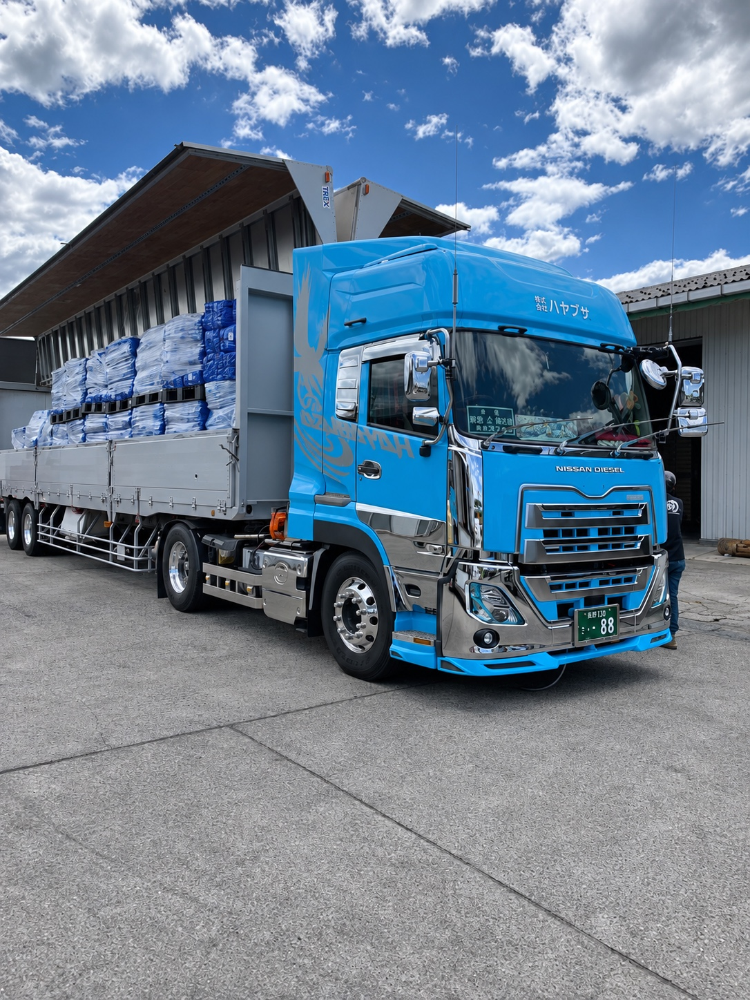
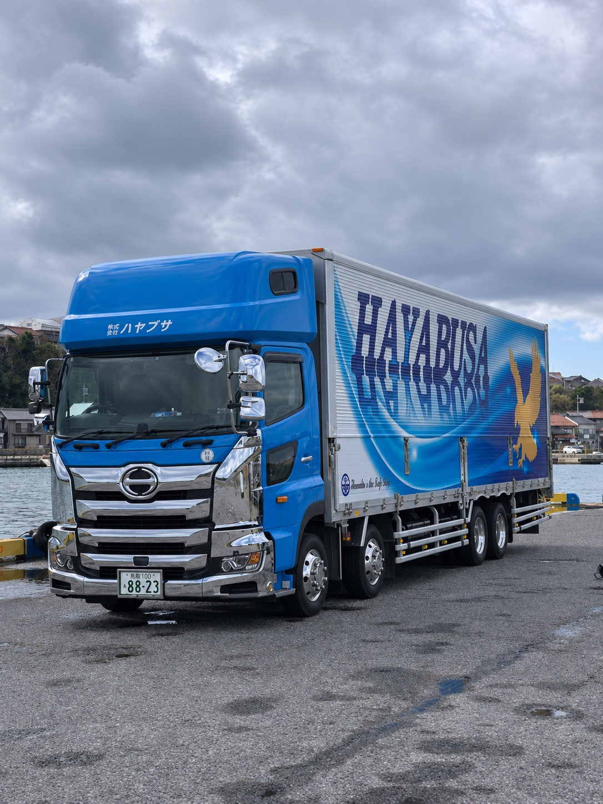
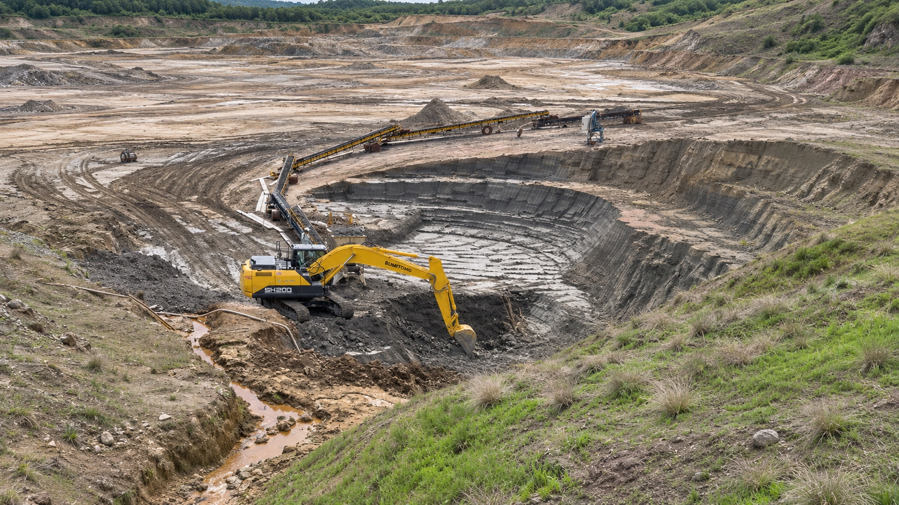
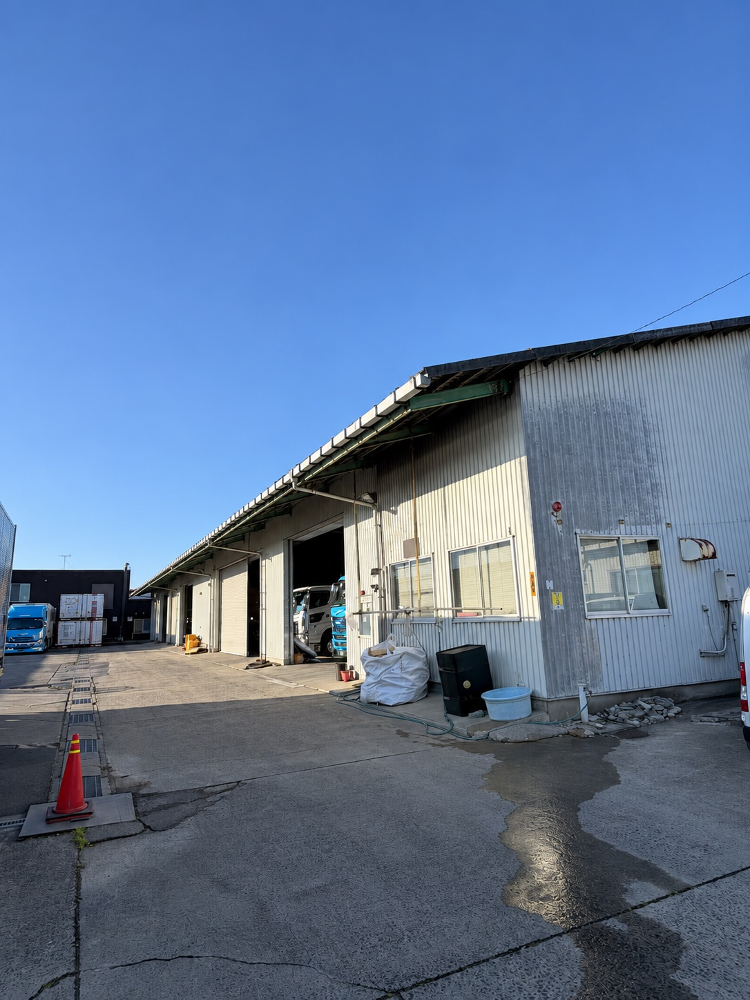
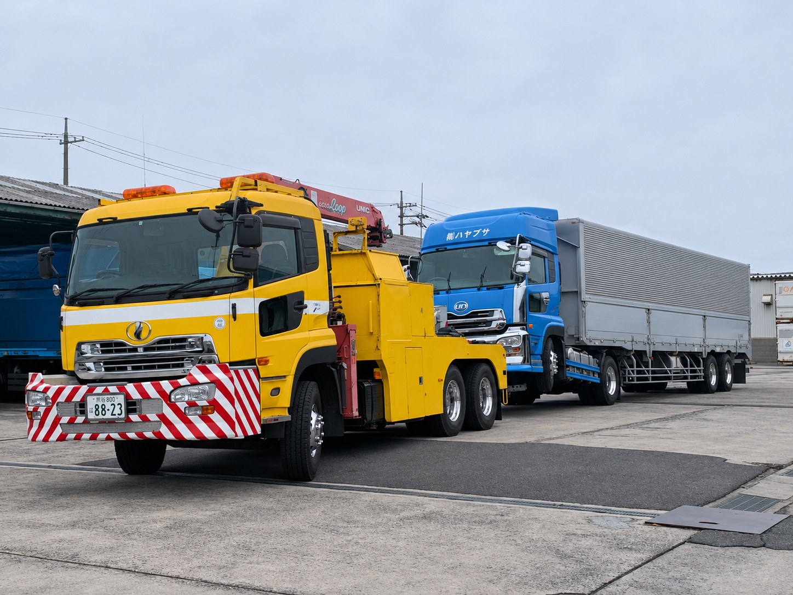
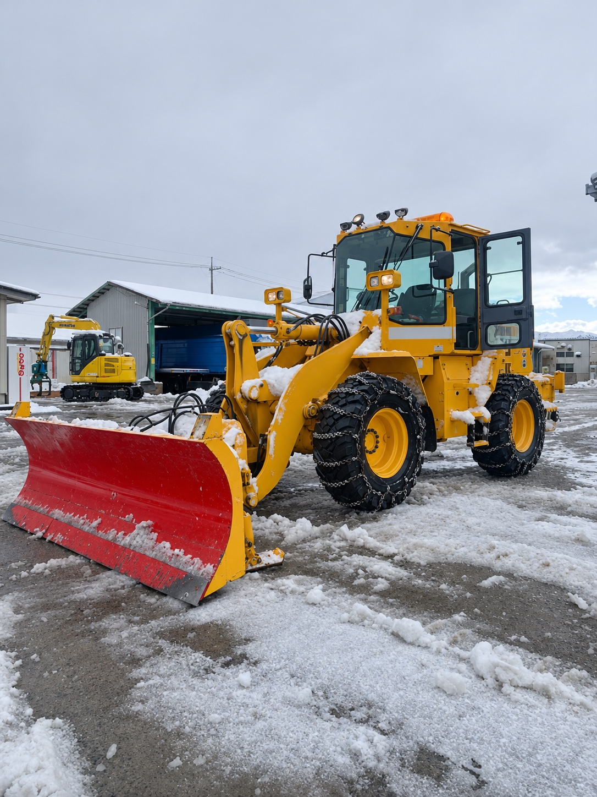

BUSINESS
事業内容
採掘から輸送まで。
現場の仕事を、
ひとつにつなぐ。
珪藻土の採掘・輸送を軸に、貨物運送、レッカー、除雪・構内業務まで。自社の車両と設備で、地域の産業を支えます。

01 / SERVICE
貨物運送
荷物を、確かに次の現場へ。
珪藻土の関東・関西エリアへの輸送や、バイオマス燃料輸送を担っています。荷物と現場に合わせて、ウィング車・タンク車・スライドデッキ車などの車両で対応します。
- 関東・関西エリアへの珪藻土輸送
- 木質チップなどのバイオマス燃料輸送
- ウィング車・珪藻土タンク車・スライドデッキ車を保有

02 / SERVICE
珪藻土の採掘・輸送
大地の資源を、必要な場所へ。
2021年5月に珪藻土の採掘事業を開始。岡山県蒜山での採掘から、関東・関西エリアへの輸送までを自社でつなぎます。
- 2021年5月より採掘事業を展開
- 油圧ショベル7台を保有（小型1台を含む）
- 採掘と輸送を一貫して対応

03 / SERVICE
自社倉庫・拠点設備
車両が集まり、仕事が動き出す。
鳥取県倉吉市秋喜に自社倉庫を2棟保有。大型車・トレーラーの乗り入れができる拠点設備で、輸送や荷役の仕事を支えています。
- 自社倉庫2棟：A棟240坪・B棟113坪
- 所在地：鳥取県倉吉市秋喜379-2
- 大型車・トレーラー乗り入れ可

04 / SERVICE
レッカー・車両対応
困ったときこそ、俊敏に。
2022年8月よりレッカー事業を展開。大型の4軸ウィング車まで、故障時の車両対応を行います。対応場所や車両の状況を、お電話でお知らせください。
- 大型4軸ウィング車まで対応
- レッカー車1台を保有
- 2027年春にレッカー車の新車導入を予定

05 / SERVICE
委託・構内業務
季節にも、現場にも合わせて。
倉吉市・真庭市での除雪業務や、フォークリフト・重機による構内作業を担います。トラクターを使った草刈業務にも対応しています。
- 倉吉市・真庭市の除雪業務
- フォークリフト・重機による構内作業
- トラクターを用いた草刈業務

RELATED WORK
そのほかの対応業務
タイヤ修理・販売にも対応しています。具体的なご依頼内容はお問い合わせください。
保有車両・設備を見る→CONTACT
次の仕事も、
一緒に考えます。
輸送・車両対応・現場業務について、ご相談ください。